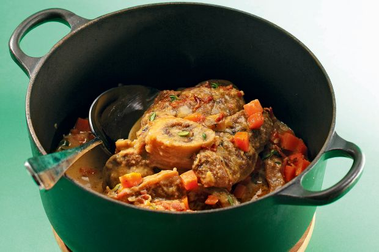

Kalbshaxen an Zitronensauce

Wie sauer diese Sauce ist, lässt sich ganz einfach durch Zugabe von mehr Saft oder etwas Zucker bestimmen – je nach Belieben.
Anzahl der Personen: 4
Zutaten:
- 1 mittelgroße Zwiebel
- 3/10 Bund Thymian
- 4 Scheiben Kalbshaxen
- Salz, schwarzer Pfeffer aus der Mühle
- 1 Esslöffel Bratbutter
- 2 Teelöffel Zucker
- 1 Teelöffel gehäufte Butter (1)
- 1 dl Noilly Prat
- 3 dl Fleischbouillon
- 1 Zitrone Saft
- 400 g Rüebli
- 50 g magere Bratspecktranchen
- 1 Esslöffel Butter (2)
- 1 dl Rahm
Zubereitung:
- Den Backofen auf 200 Grad vorheizen.
- Die Zwiebel schälen und hacken. Die Thymianblättchen von den Zweigen zupfen. Ein Drittel der Blättchen für die Garnitur beiseitelegen.
- Die Kalbshaxen mit Salz und Pfeffer würzen. In einem Bräter die Bratbutter kräftig erhitzen. Die Haxen darin auf beiden Seiten goldbraun anbraten. Herausnehmen.
- Den Zucker zum Bratensatz geben und zu goldbraunem Caramel schmelzen lassen. Die erste Portion Butter (1) beifügen und unter Rühren aufschäumen lassen. Dann die Zwiebel beifügen und glasig dünsten. Mit dem Noilly Prat ablöschen und diesen leicht einkochen lassen. Dann die Bouillon und den Zitronensaft dazugeben, die Kalbshaxen hineinlegen und alles aufkochen.
- Den Bräter mit einem Deckel oder Alufolie verschließen und das Fleisch im 200 Grad heißen Ofen auf der zweituntersten Rille 1 1/2 - 1 3/4 Stunden schmoren lassen, bis sich das Fleisch vom Knochen zu lösen beginnt.
- Inzwischen die Rüebli schälen und in knapp 1 cm große Würfel schneiden.
- Die Bratspecktranchen in feine Streifchen schneiden.
- In einer Pfanne die Speckstreifchen im eigenen Fett langsam knusprig braten. Dann die zweite Portion Butter (2) beifügen und erhitzen. Die Rüebli hineingeben, den beiseitegestellten Thymian sowie 2 Esslöffel Wasser beifügen und alles unter gelegentlichem Wenden so lange dünsten, bis die Rüebli knapp weich sind. Mit Salz und Pfeffer abschmecken und zugedeckt beiseitestellen.
- Am Schluss der Garzeit die Kalbshaxen aus dem Bräter nehmen und zugedeckt warm halten. Den Rahm zur Sauce geben und diese mit dem Stabmixer fein pürieren. Auf großem Feuer nochmals etwa 5 Minuten einkochen lassen, bis die Sauce leicht bindet. Mit Salz und Pfeffer würzen.
- Gleichzeitig die Rüebli nochmals kräftig erhitzen.
- Die Kalbshaxen in die Sauce zurücklegen und nur noch gut heiß werden lassen. Mit der Sauce auf vorgewärmten Tellern anrichten und die Speck-Rüebli dekorativ darüber verteilen. Sofort servieren.
Nährwertangaben:
Pro Portion:
Kalorien: 445 kKalorien
Joule: 1861 kJoule
Kohlenhydrate: 10g
Eiweiß: 24g
Fett: 31g
ProPoints™: 11
Erschienen in: 2 | 2012, S. 9